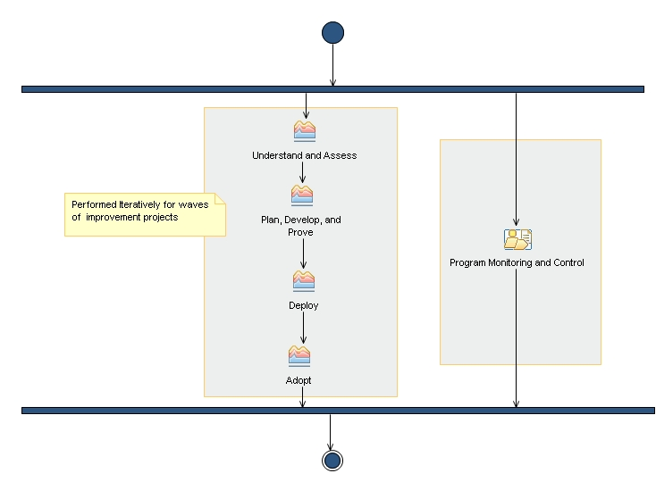

Delivery Process: Software Capability Improvement
This process helps you assess, develop, manage, adopt and improve your organization's software delivery capabilities.
Description
Work Breakdown Structure
Team Allocation
Work Product Usage
Workflow

Work Breakdown
Licensed Materials - Property of IBM
© Copyright IBM Corp. 1987, 2011. All Rights Reserved.